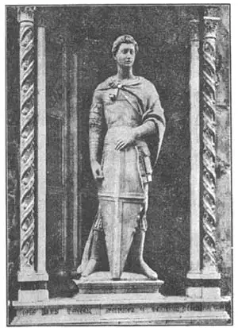
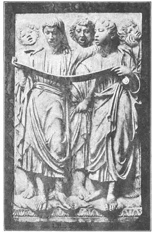
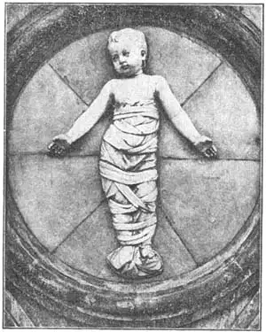

45
A TREASURE HUNTER AND A SECRET
寻宝人和秘密

HAVE you ever had spring fever? Both kinds of spring fever?
Yes, there are two kinds.
Do you remember how lazy and sleepy and tired you have sometimes felt on a warm spring day, when you didn’t want to study or work or play or even eat? That’s one kind of spring fever.
Then again, do you remember how energetic and healthy and restless you have sometimes felt in spring? When you wanted to run and shout and turn handsprings, when sitting still was terrible, when you felt as if you could do anything hard and beat anybody at anything? That’s the second kind of spring fever.
Well, after the Middle Ages, the whole world got spring fever; and it was the second kind, the full-of-energy spring fever, and it lasted not just a few days in spring but many years.
Italy caught the fever first, about 1400. Just as life is born again in the spring after the dark winter and blossoms forth in green leaves and bright flowers, so new life was born again in painting, architecture, writing, sculpture, exploration, discovery, trade, and everything else, and blossomed forth after the dark of the Middle Ages.
This Born Again time, we call the Renaissance—a word that means Rebirth.
Now, one of the germs that had made the world catch this Renaissance fever was the interest people began to take in the skill and learning of ancient times. Statues and buildings that had been buried in the ground since Roman times were dug up. Old Roman and Greek writings were brought to light and read again. In learning what the Ancients had done in art the Renaissance people did some great things in art themselves.
One of the first sculptors to make a thorough study of the Roman statues was named Donatello. He lived in Florence, but when still a very young man, he went to Rome with a friend named Brunelleschi. In Rome the two friends spent their time hunting through the old ruins for any beautiful Roman work they could find. Brunelleschi was more interested in architecture and he measured the old Roman buildings while Donatello looked for sculpture. Soon people called them the Treasure Hunters because they always seemed to be looking for buried treasure.
When the two Treasure Hunters came back to Florence, Donatello made a beautiful marble gallery for singers, for the wall at one end of the cathedral. The outside of the gallery he filled with sculpture of little children, who look like cupids, dancing and singing. It is a very wonderful piece of work, full of life and action.
Donatello’s next famous statue was set up on the outside of a church in Florence. It is of Saint George. Saint George was a Christian in the Roman army at a time when it was very unsafe to be a Christian. To show he was not afraid of being called a Christian, he wore on his shield a bright red cross with a white background. This has ever since been called the cross of Saint George and is a part of the flag of England, for Saint George was adopted by the English as their favorite saint. He was a brave man and when the Roman emperor began to persecute the Christians, Saint George went to him and asked him to stop. For this, and because Saint George was a Christian, the emperor had him killed.
Of course Donatello didn’t know what the real Saint George looked like, as he had lived so long before, and so this statue is not a portrait statue. It is what Donatello thought a fine, brave young Christian officer in the Roman army ought to look like. So many other people, too, thought this was what Saint George ought to look like that the statue became very famous. It is very lifelike.
“There is only one trouble with it,” some one told Donatello.
“’What is that?” asked the sculptor, who was afraid the man had found some fault in the statue.

No.45-1 SAINT GEORGE（《圣乔治》）
DONATELLO（唐纳泰罗 制）
“The trouble is it can’t speak,” said the man.
Donatello’s most famous work was of a man on horseback. I’ll tell you about that in the next chapter, for in this chapter I still have to tell you about a secret. Can you keep a secret?
A sculptor who was a friend of Donatello’s had a secret. It was a very good secret and he didn’t tell any one except his adopted son. The adopted son had five sons of his own and when they grew up they were let into the secret, too. It was a family secret.
The sculptor who had the secret in the first place was named Luca della Robbia. Like Donatello, he lived in Florence. He was a little younger than Donatello and so we call him the second great sculptor of the Renaissance. Luca della Robbia made statues in marble and bronze. One of his works in marble was a gallery to go on the end wall in the cathedral, opposite Donatello’s marble gallery.
Luca della Robbia carved singing boys on this gallery as Donatello had on the other one. The two galleries are called the Singing Galleries. Luca della Robbia’s looks better than Donatello’s when you are close to it because Donatello’s is rougher and not so smoothly finished. But when you are as far away from the galleries as you would be on the floor of the cathedral, Donatello’s figures stand out better just because they are rougher. So it’s about even between them.
They are both so valuable that they are now in a museum instead of in the cathedral.
But we’ve almost forgotten about the secret. Luca della Robbia found it took a great deal of time to carve in marble, and marble was very expensive to buy. When he got through and was paid for his work, he generally found he hadn’t made much money. Bronze had the same drawbacks. He decided to try to find some material that could be quickly used and was inexpensive. He found it. What do yon think it was? Not wood or stone, and of course not marble or bronze, but clay.

No.45-2 PART OF THE SINGING GALLERY
（《唱歌画廊》局部）
LUCA DELLA ROBBIA（卢卡·德拉·罗比亚 制）
“Well,” you say, “even the Greeks used clay. I remember the terra cotta figurines of Tanagra.”
True, but wait. Luca della Robbia used terra cotta, but here comes in his secret. After he finished the clay statue, he put over it a coating of porcelain, which is something like glass. Then he baked the figure in an oven for just the right length of time. His secret was in mixing the porcelain or glaze, as it was called. When it was finished it would last in the rain and bad weather just as well as marble, whereas the terra cotta without the glaze would soon crumble away. Other sculptors tried it, but none did as fine work in glazed terra cotta as Luca della Robbia. His secret glazing process was very successful.
Most of the sculpture Luca della Robbia did in glazed terra cotta was in relief. The relief part was generally white like marble, but the background was a beautiful shade of blue.
Luca della Robbia taught his nephew, whom he had adopted as a son, the secret of the glazed terra cotta. The nephew’s name was Andrea della Robbia and Andrea became almost as famous as Luca. Andrea did most of his work in glazed terra cotta and he added many more colors to his reliefs, although he generally left the flesh part of his statues white. His best examples were reliefs of the Madonna and Child.
For the outside of a children’s hospital in Florence, Andrea did a series of terra cotta high reliefs of babies in swaddling clothes. Each baby is on a separate round background. You may have seen plaster casts of these babies, but the plaster casts are white and so do not show the colors that Andrea della Robbia put on the originals. Each baby is called a bambino because that is the Italian for baby.

No.45-3 BAMBINO（《襁褓婴孩》）
ANDREA DELLA ROBBIA（安德烈亚·德拉·罗比亚 制）
【中文阅读】
你犯过“春热症”吗？两种“春热症”都犯过吗？是的，“春热症”有两种。
还记得吗？有时在一个温暖的春日，我们不想学习、不想工作，不想玩，甚至不想吃东西，整个人感觉疲惫，就想睡觉。这是第一种“春热症”。
接下来，还记得在春天我们有时候会觉得精神抖擞，身体康健，焦躁不安吗？我们想奔跑，想大叫，还想翻筋斗。这时候怎么也坐不住，觉得能做任何事，能打 败任何人。这是第二种“春热症”。
中世纪后，整个世界都患上了春热症，患的是第二种，就是那种充满活力的春热症。这次春热症不是短短的几天，而是持续了好多年。
大约在1400年，意大利首先患上这种热症。就像在经历了漫长的黑夜后，万物苏醒，姹紫嫣红，于是，在经过了黑暗的中世纪后，绘画、建筑、写作、雕刻、探险、发现、贸易等各个方面都展现出了新的活力。
我们把这股新活力称作“文艺复兴”，就是再生之意。
现在看来，整个世界之所以赶上文艺复兴热潮，原因之一就是人们对学习古代技能和知识产生了兴趣。从古罗马时期就埋藏在地底下的雕像、建筑开始被挖掘出来。人们开始阅读古希腊罗马的书籍。在学习古人留下的艺术珍品过程中，文艺复兴时期的人们自己也创造了许多伟大的艺术作品。
最早深入研究古罗马雕像的雕刻家中有一位名叫唐纳泰罗。他住在佛罗伦萨，他在年轻时跟一个叫布鲁内列斯基的朋友来到罗马。在罗马，这两个朋友一直在古老的废墟中寻找古罗马时期的艺术精品。布鲁内列斯基对建筑更感兴趣，所以他到处测量古罗马时期遗留的建筑。唐纳泰罗却到处寻找古罗马时期的雕像。后来，人们就称他们为“寻宝人”，因为他们好像总在寻找埋在废墟里的宝藏。
两个寻宝人回到佛罗伦萨后，唐纳泰罗用大理石为歌手们建造了一座漂亮的画廊，形成大教堂一端墙壁。他在画廊外墙壁上雕刻了许多孩童的雕像，看上去就像唱歌跳舞的美男孩。这件作品极富动感和活力，堪称杰作。
唐纳泰罗还刻了一件非常著名的雕像，竖在佛罗伦萨一座教堂外，那就是圣乔治像。圣乔治是罗马军中的一名基督徒。那时做基督徒是件危险事。他为了表示不怕做基督徒，就为自己的盾牌佩了一个白底红色十字架。从此，“圣乔治十字架”就这么被称呼开来，并成为英国国旗的一部分。圣乔治是英国人最爱戴的圣徒。他非常勇敢。在罗马皇帝开始屠杀基督徒时，圣乔治去找皇帝祈求停止杀戮。因为这个原因，再加上圣乔治自己就是基督徒，罗马皇帝便将他杀害了。
当然，唐纳泰罗并不知道圣乔治真正的样子，因为圣乔治的年代要比他早很多。所以，这座雕像并不是半身雕像。唐纳泰罗根据罗马军中英俊勇猛的基督徒军官的样子刻了圣乔治像。许多人也都觉得圣乔治长的就是这样。栩栩如生的圣乔治雕像变得名气很大。
“还是有问题，”有人对唐纳泰罗说。
“什么问题呢？”雕刻家问。其实他很害怕这人会挑出雕像的缺陷。
“就是这雕像不会说话，”这人答道。
唐纳泰罗最著名的雕像作品刻画的是一个马背上的骑士。我在下一章会作介绍，因为在这一章我要透露一个秘密。能做到保密吗？
这个秘密是有关唐纳泰罗一个雕刻家朋友的。当然这并不是什么见不得人的秘密。除了养子外，他没告诉过任何人。这养子生了五个儿子。儿子们长大后也将这秘密传给了自己的孩子。就这样，这个秘密成了一个家族秘密。
这秘密一开始的主人公是一个叫卢卡·德拉·罗比亚的雕刻家。像唐纳泰罗一样，这人也住在佛罗伦萨。因为他比唐纳泰罗年轻，所以我们称他“文艺复兴伟大雕刻家第二”。卢卡·德拉·罗比亚雕刻大理石雕像和青铜雕像。他有件作品是依附大教堂后墙建造的大理石画廊，刚好在唐纳泰罗大理石画廊的正对面。
卢卡·德拉·罗比亚在画廊里刻了许多唱歌的天使雕像，唐纳泰罗在对面那画廊也如此，所以这两个画廊都被称作“唱歌画廊”。近看时，卢卡·德拉·罗比亚的雕像要比多纳泰罗的雕像好看些，这是因为多纳泰罗的作品更粗糙些，没有卢卡·德拉·罗比亚的作品那么光滑。相反，如果在远处看，比如站在教堂的地板上，你会发现多纳泰罗的作品显得更加突出，原因正是粗糙。所以说，两位雕刻家只能平分秋色。
他们的作品非常珍贵，所以现在都收藏在博物馆里，而不是放在大教堂里。
不过，我们好像忘记了先前提到的那个秘密了。卢卡·德拉·罗比亚发现用大理石刻雕像要花大量时间，而且大理石当时又非常贵。每当他在作品完工后出售时，就发现根本卖不上价。青铜雕像也有同样弊端。所以，卢卡·德拉·罗比亚决定寻找一种既好用又便宜的材料。他后来果真找到了。猜猜是什么材料？这种材料既不是木头也不是石头，当然更不是大理石或青铜，而是粘土。
我们可能会说：“这有什么，古希腊雕刻家不也用粘土嘛，我还记得塔纳格拉的陶土小雕像呢。”
没错，不过请稍等。正是卢卡·德拉·罗比亚用陶土作材料，才引出了他的秘密。在完成一件陶土雕像后，他会为雕像披上一件像玻璃一样的瓷外衣。然后再用烤炉将雕像烘焙一段时间。而秘密就在于怎样给雕像披上瓷外衣。我们称这个过程为“上釉”。上釉后的雕像就像大理石雕像一样能经受风吹雨打等恶劣天气的考验，然而没有上釉的陶土雕像很快就会土崩瓦解。其他雕刻家也尝试过制作这种类型的雕像，但却没人做到像卢卡·德拉·罗比亚那么成功。卢卡·德拉·罗比亚上釉的秘方相当有效。
卢卡·德拉·罗比亚大部分陶土雕像都是浮雕。这部分通常都像大理石一样呈白色，但背景却是一种很漂亮的蓝色阴影。
卢卡·德拉·罗比亚将如何制作上釉陶土雕像的秘方传给了他外甥，也就是他的养子，叫安德烈亚·德拉·罗比亚。他后来跟卢卡·德拉·罗比亚一样出名。安德烈亚大部分作品也是上釉的陶土浮雕。尽管他的雕像人体部位一般呈白色，但他也给浮雕加了许多别的色彩。他的代表作是《圣母子像》浮雕。
安德烈亚·德拉·罗比亚用陶土为佛罗伦萨一所儿童医院的外墙雕刻了一组高浮雕，刻画的是襁褓中的婴孩。每个婴孩都单独刻在一个圆形背景上。现在我们看到的都是婴孩雕像的石膏模型。这些石膏模型都是白色的，所以就无法展示安德烈亚·德拉·罗比亚原作上的丰富色彩。意大利语用“襁褓婴孩”指“婴孩”。